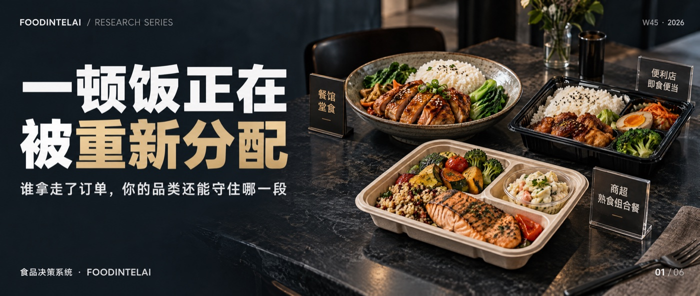

便利店半年净增1391家，71.7%的企业来客数下降：一顿饭到底被谁拿走了消费任务与跨业态替代研究 · 第1篇 母模型 ｜ QTOS-DEMAND-001-AFoodIntelAI 研究组 · 沧林 ｜ 2026年11月2日 ｜ W45专题 1/6便利店半年多开了1391家，七成企业的来客数却在下降。订单离开了一家店，不一定去了另一家同类的店。本周研究一个问题：一顿饭正在怎样被重新分配，哪些是真替代，哪些只是数字带来的错觉。
图｜FoodIntelAI W45 系列（共 6 篇），本篇为第 1 篇。中国连锁经营协会2026年7月21日发布的《上半年便利店企业发展情况简报》里，有两个数字放在一起很扎眼：60家样本企业、近12.8万家门店，上半年净增门店1391家；同时，71.7%的企业来客数下降。2025年的数据更直接：样本企业单店日均营收4453元，同比下降3.9%，单店来客数下降8.7%。文献再看同期的其他渠道。国家统计局数据，2026年1—9月全国餐饮收入增长2.4%；限额以上单位的便利店、超市零售额分别增长5.2%、4.1%；网上商品零售额里，吃类商品增长15.8%。文献把这些数字拼在一起，很容易写出一个故事：便利店在抢餐馆的午饭，线上在抢线下的生意，一顿饭正在被重新分配。故事很顺，但有个问题：现有数据，证明不了这个故事。便利店多开了店，来客却在减少，说明门店数增加不等于需求增加；餐饮和便利店的销售额都在涨，也不等于这些钱是从对方那里转过来的。订单离开了一家店，不一定去了另一家同类的店。供给侧的数据能说明谁在进入，说明不了谁被替代。这是W45专题的第一篇。要做的事，是为这个问题建立一套可以检验的方法：什么叫替代，什么证据能证明它，一顿饭的选择在经济上怎么比较。+1,391家CCFA样本便利店2026年上半年净增门店71.7%2026年上半年来客数下降的便利店企业占比+5.2%1—9月限额以上便利店零售额同比（全国餐饮收入同比+2.4%）数据：中国连锁经营协会《2026上半年便利店企业发展情况简报》；国家统计局。图1 同一时期，不同渠道的增速（2026年1—9月，%）口径不同：便利店、超市为限额以上单位零售额，餐饮为全部餐饮收入，网上吃类为网上商品零售中的吃类商品。只能看相对节奏，不能直接相减。“餐馆慢了，便利店快了”，可以对应四种完全不同的关系（表1），经营者该做的事也完全不同。渠道转移同一任务，换了入口堂食午餐改点外卖品类还在，要补入口替代同一任务，换了业态午餐从餐馆换成便利店即食防守，或者进入新增原本不存在的消费下午多出来的一杯咖啡是增量，不是抢来的便利店自己的数字，也提醒我们别急着下结论：门店在增加，来客在下降。协会的分析认为，即时零售、零食折扣店等渠道在分流到店客流，客单价也有所下滑。这是机构对原因的判断，不是对每一单去向的追踪。文献研究假设新增的门店如果主要在分流旧店的客流，行业的门店数会增加，整体的订单不会。所以“多开了多少店”，永远回答不了“多出了多少需求”。一顿饭不是一个品类，而是一个任务：谁，在什么时间，有多少预算，在什么条件下，要解决什么需求。同样是午饭，工作日二十分钟内解决的午饭，和同事聚餐的午饭，根本不是同一个任务，候选的选项也不同（表2）。工作日快速午餐时间不超过20分钟，预算有限餐馆快餐、外卖、便利店即食、商超熟食家庭晚餐口味、份量、家人数家庭自做、商超熟食、外卖只有同一个任务里的选项，才有资格谈替代。拿“晚餐的外卖”去和“午饭的便利店”比，是在比两个不同的问题。这张分类是本专题的初始设定，会在后面几篇里用证据修正。研究假设这是整个专题的纪律所在。常见的几类数据，能证明的和不能证明的，差别很大（表3）。同一消费者的选择记录同一任务下的实际选择因果，需要对照问卷和行为之间常有落差：人们说自己会在便利店解决午饭，不等于他们真的这样做。所以问卷只能当线索，要用实际的购买记录去核对。据此，本专题给出一个判断“替代关系成立”的最低条件：任务相同；时间与预算相同；消费者确实在两个选项之间切换；一方的减少和另一方的增加，发生在同一批人身上，时间上对得上。四条里缺任何一条，就只能写成“线索”，不能写成“替代”。研究假设把一顿饭放在同一个餐次里比较，最朴素的办法，是算综合成本：餐食价格，加上取得这顿饭花掉的时间，按一个机会成本折算成钱。综合成本 = 餐食价 + 总耗时（小时）× 时间机会成本下面是演示表（表4）。机会成本取每小时25元，所有数值都是虚构的，不代表任何城市或业态。实际采数时，购买前的行走、等待、取餐、用餐，要分别记录，同时控制份量和品质。示意这张表有两个必须说清的局限。第一，便利店在价格和时间上同时占优，这在现实里很少见，因为份量、热食、座位、口味稳定性都不同，采数时必须控制，否则比的不是同一顿饭。第二，把机会成本换成每小时15元或40元，三个业态的综合成本都会变，排序在这组假设下不变（表5）。排序不变，说明这个比较里时间不是决定因素，真正起作用的，可能是价格之外的东西，那是第5篇要回答的。示意最重要的一句：综合成本更低，只能说明在某个假设条件下，这个选项有优势，不能证明消费者已经从别的业态转过来了。要证明转移，还需要同一个消费者的选择记录、调查，或者可比的试验。这几年，跨业态的动作很密集。美宜佳在筹划餐饮型门店，规划鲜食占比超过40%，近百个鲜食SKU，目前仍在测试优化、尚未定型；湖南新佳宜放慢开店，投入数千万元建了鲜食工厂；古茗截至6月底约有13500家门店配备了咖啡机。便利店在进入餐馆的任务，茶饮店在进入咖啡的任务。文献这些是重要的供给侧信号，说明经营者已经在押注“任务”而不是“品类”。但它们证明的是意图和能力，不是结果：开了餐饮型门店，不等于卖出了午饭；配了咖啡机，不等于订单是从咖啡店抢来的。第2篇和第3篇，就是拿这些动作的真实数据，逐项检验。六篇研究，不是六个孤立的结论，而是同一个模型的六块（图2）。这一周只冻结这一个母模型，第2、3篇的跨品类与新鲜度经济，暂作为研究模块，等取得独立证据再考虑升格。对应到本周：第2篇检验品类交叉，第3篇检验供给约束，第4篇采集三业态的实测数据，第5篇研究价格之外的选择因素，第6篇整合成经营决策卡。先别问“谁拿走了我的订单”，先问三个问题：你自己的订单，在时间、渠道、品类上发生了什么变化，这是你手里唯一不需要推测的证据；你的竞争对手名单里，有没有一个“另一个品类”，在同一个时段、同一类人身上，争同一笔钱；有没有一个小规模的试验，能在不押上整个门店的前提下，验证你的猜测。具体做法不复杂：把过去十二个月的订单，按时段、渠道、品类拆开，先看哪个时段、哪个渠道的变化最大，再去追问，变化发生在哪一类顾客身上。把“我被替代了”，换成“我在哪个任务上被谁分流了，证据是什么”。下一篇进入一个具体的案例：咖啡店开始卖奶茶，茶饮店开始卖咖啡，新增的是订单，还是只是菜单。第4篇需要真实的三业态午餐样本，如果你愿意参与一周的午餐记录（餐食价、行走、等待、用餐时间），可以在后台回复“午餐”，我们会发送记录表。完整研究 · foodintelai.com 知识库消费任务分类表、替代判据与三业态对照表，随专题推进陆续沉淀到青藤OS。[1] 中国连锁经营协会《2026上半年便利店企业发展情况简报》（2026年7月21日发布），经36氪、界面新闻、网易、虎嗅等多家转载相互核对：60家样本企业门店总量127,872个，净增1,391个；销售额增长企业占46.7%、下降占50.0%；净利润下降企业占60.0%；来客数下降企业占71.7%；销售与利润双增长企业占18.3%。[2] 中国连锁经营协会《2026年中国便利店发展报告》（2026年初发布，样本为56家企业15.9万家门店），经36氪、新浪、虎嗅转载：2025年净增门店7,572家（2024年为9,570家）；样本企业单店日均营收4,453元（上年4,634元），下降3.9%；单店来客数下降8.7%。协会关于即时零售、零食折扣店等渠道分流的分析，见北京商报2026年7月22日报道。[3] 国家统计局2026年10月20日发布《2026年1—9月份社会消费品零售总额增长1.1%》：餐饮收入41,969亿元，增长2.4%；限额以上单位便利店、超市零售额分别增长5.2%、4.1%；网上商品零售额中吃类商品增长15.8%。[4] 红餐网2026年6月3日报道：美宜佳筹划餐饮型门店，鲜食占比规划超过40%，近百个鲜食SKU，目前仍处于测试优化阶段。新佳宜投入数千万元建设鲜食工厂，见虎嗅、泛娱研究等2026年7月报道。古茗约13,500家门店配备咖啡机，见古茗2026年中期业绩的媒体报道（详见W43第4篇来源）。证据等级：“文献”为行业协会、官方统计或企业公开披露；“研究假设”为本专题的判断，尚未经过样本验证；“示意”为演示算法的虚构数值，不代表任何城市或业态。
口径说明：(1) 图1中各项口径不同，只能比较相对节奏，不能直接相减。(2) 便利店数据来自协会样本企业，覆盖企业自愿填报，不代表全行业。(3) 便利店2025年数据与2026年上半年简报的时间区间不同。(4) 本篇不宣称任何业态之间的替代已经发生，表4、表5为虚构演示。(5) 协会对来客数下降原因的分析，属机构判断，不是对每一单去向的追踪。
数据截止：2026年10月24日。声明：本文为行业研究，数据来自公开资料，不构成投资、经营或法律建议。本文在AI辅助下完成起草，经作者审核。